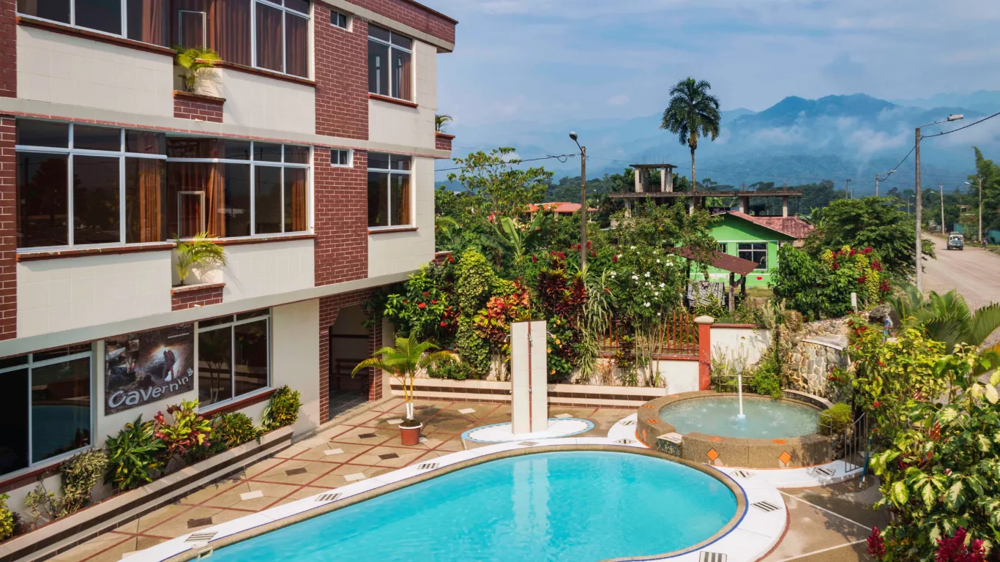
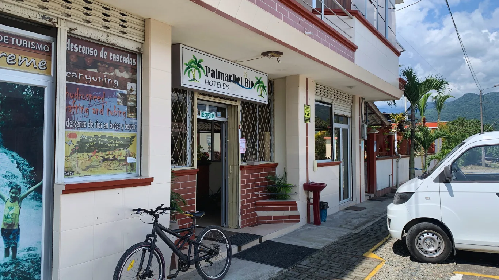
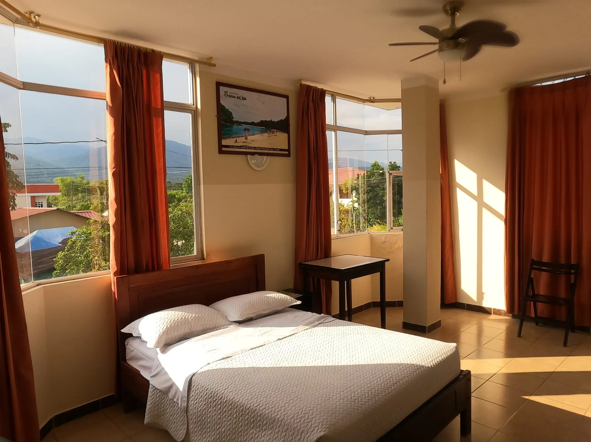
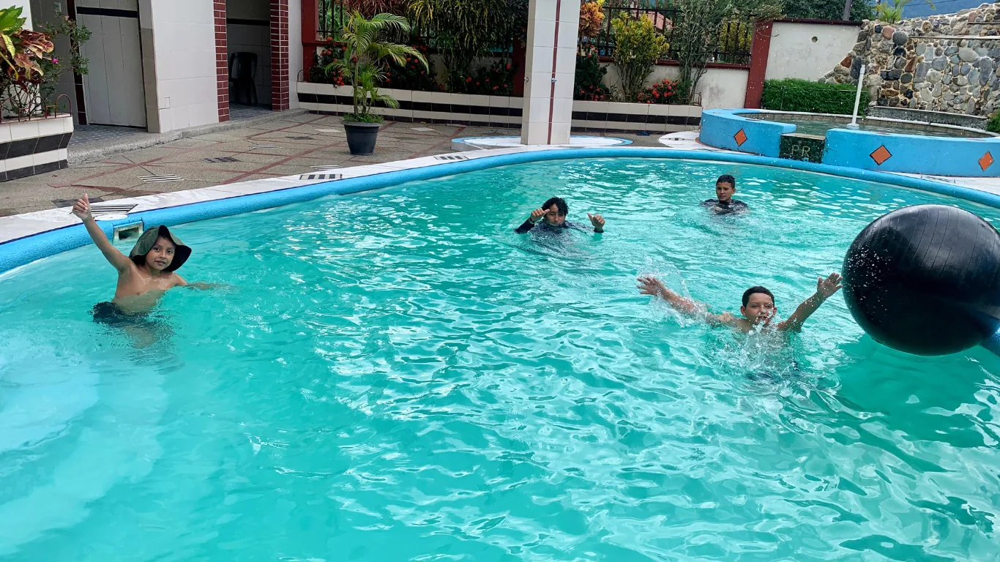

← Volver al inicio
Archidona · Napo
Gran Hotel Palmar del Río
Una base cómoda y cercana para descansar, trabajar o salir a descubrir la Amazonía ecuatoriana.
Hospitalidad desde 1999
Todo lo esencial, bien resuelto
Habitaciones familiares con baño privado, Wi-Fi gratuito, televisión y vistas de la ciudad. Además, recepción 24 horas, sala compartida, información turística y estacionamiento sin costo.
Ubicación: Avenida Napo y Transversal 13, Archidona.
DesdeUSD 20por persona / noche
Recepción 24 hAtención durante toda tu estadía.
Habitaciones familiaresOpciones cómodas para compartir.
Wi-Fi gratuitoConexión disponible para huéspedes.
EstacionamientoParqueo privado sin costo.
Información turísticaOrientación para conocer Napo.
Baño privadoComodidad y privacidad.
Una mirada al hotel
Descansa a tu ritmo


